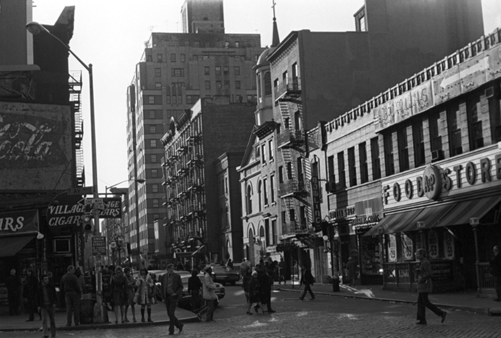
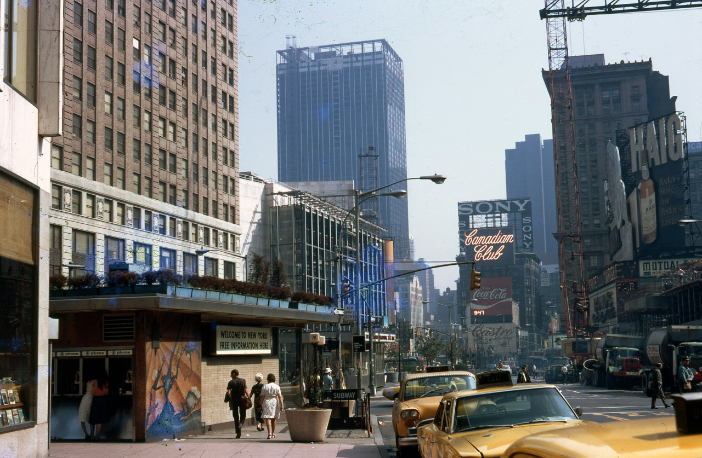
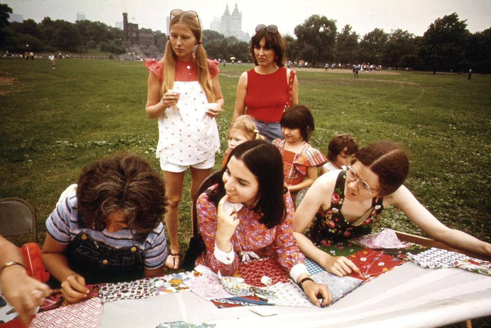
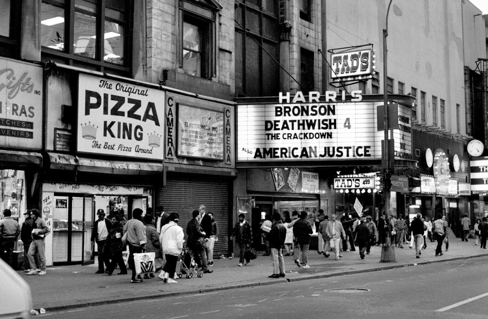

The Bronx, 1978
The Bronx, 1978

7th Ave and Christopher St, circa 1970

Broadway and 43rd Street, looking north, ca. 1971

57th Street station on the B line, looking north. The clearing in the distance is Central Park. Photo taken on September 25, 1979 by Harold I. Wright, from the collection of the New York Transit Museum.

l ‘instant “original writers Kings” 1973…


Quilting in Central Park, 1973
